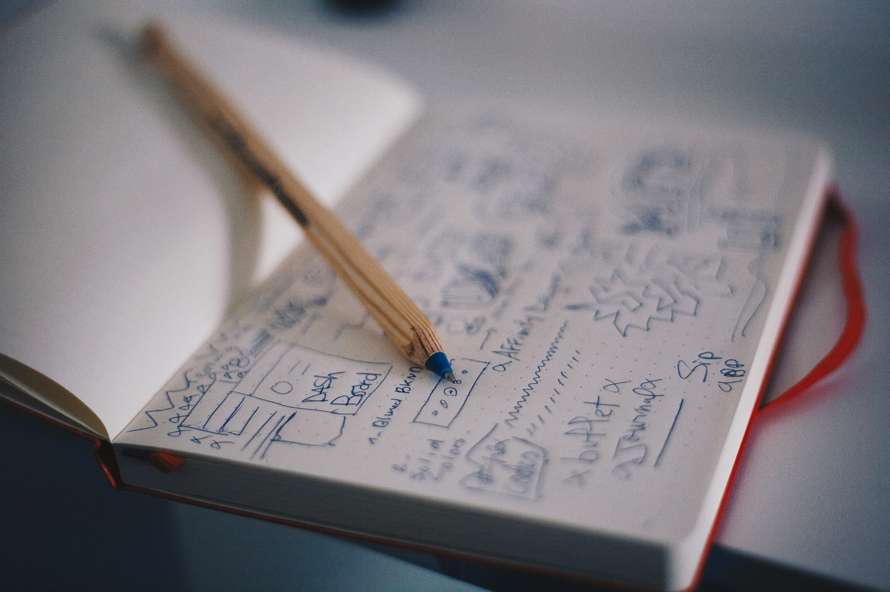

What are you looking for?
How can your website's UX be optimised?
We go straight to the users and provide results and
recommendations in as little as 5 days.

UX2GO has its own tailor-made heuristic tool,
refined to quickly identify UX issues and propose recommendations in as little as 2 days.